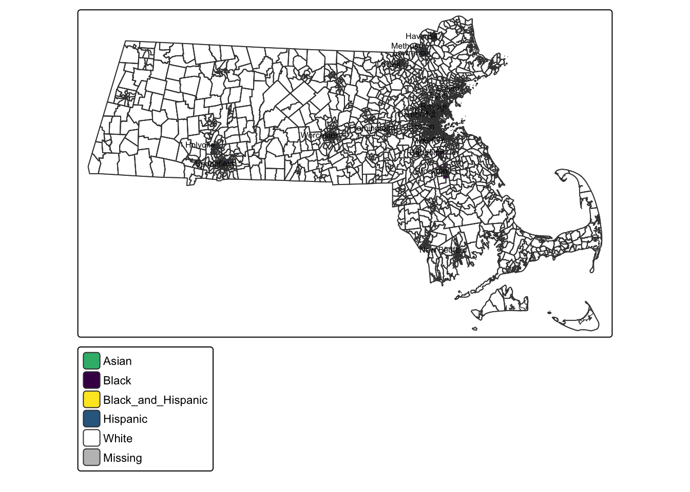
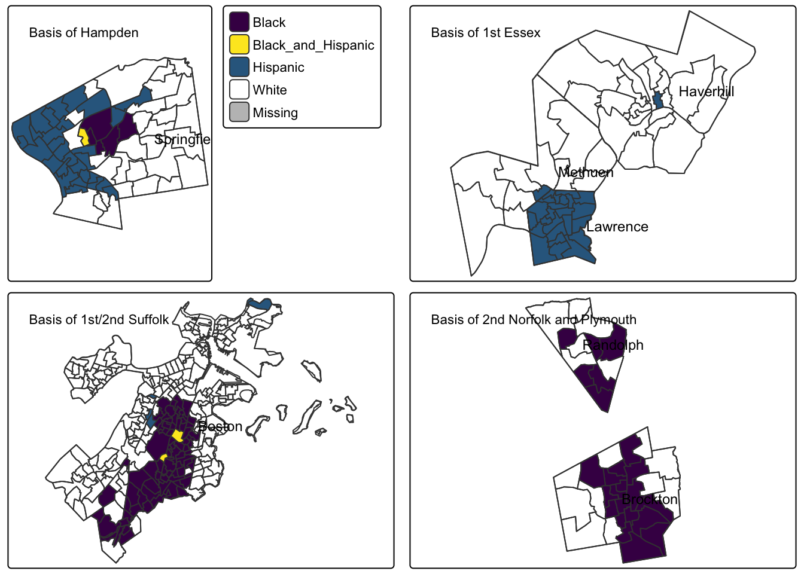

| Predominant Group | Precinct Count | Percent |
|---|---|---|
| White | 1948 | 91% |
| Black | 102 | 5% |
| Hispanic | 94 | 4% |
| Asian | 5 | 0% |
| Black_and_Hispanic | 3 | 0% |
A look at MA State Senate Redistricting
There are now six majority-minority state senate districts in Massachusetts but only three give minority voters a robust chance of electing their candidate of choice
Overview
This deep-dive on the 2020-2021 Massachusetts State Senate redistricting focuses on the Voting Rights Act’s requirement to create districts that disallow the dilution of minority voting blocks. By looking at the predominant voting group in each Massachusetts precinct we see the opportunity and limits of what can be achieved in for Massachusetts State Senate districts.
While there are six state senate districts that are technically majority-minority in the newly created districts, only three provide a particular minority voting block with the power to elect its candidate of choice, and that is the best that can be done given Massachusetts voter demographics.
Redistricting Concepts
The Massachusetts State Senate lines have been redrawn by the legislature after the 2020 Census as required by the constitution. For a guide to the redistricting principles used by the state legislatures, a good reference is the Executive Summary of the Redistricting Red Book, published by the National Conference of State Legislatures.
The primary responsibility given to redistricters by the constitution is to ensure equally-sized districts. For state legislatures, the courts have generally approved of redistricting plans where the largest and smallest districts are within 5 percent of the target population. The equal-size mandate results in the shifting of district lines as populations ebb and flow through the Commonwealth.
The next mandate for the redistricters comes from the Voting Rights Act (VRA) and relates to race, color, and minority language groups. While it is illegal to use race and ethnicity as factor in redistricting in the general case, it is also illegal to dilute concentrations of a minority voting block, resulting in that voting block not being able to elect its candidate of choice.
While the short-hand concept of a majority-minority district is often used when evaluating redistricting plans, it is usually an oversimplification which does not addequately address minority voting block dilution. In particular, minority groups do not usually vote as a monolith. A district with 25% black voters and 30% hispanic voters is technically majority-minority, but gives neither the black voters nor the hispanic voters the ability to elect their preferred candidate. (In practice, redistricting bodies can use techniques like ecological regression to analyze and account for historical voting patterns and tendencies to understand the voting blocks in play.)
The newly drawn 2020-2021 Massachusetts State Senate districts increase the number of majority-minority districts from three to six, but only three of the districts contain a minority voting block with enough power to elect their candidate of choice. It is also clear from looking at the data that there aren’t enough geographically concentrated minority blocks in Massachusetts to do any better at this time.
Concentrations of Minority Voting Blocks
Let’s first look at the 2,152 voting precincts in Massachusetts by flagging any precinct that has a citizen voting age population (CVAP) for a minority group that is over 40% of the total citizen voting age population.
We use citizen voting age population because that is the actual number of people who are eligible to vote, a better determinant of voting power than total population. We will also use voting age population and overall population numbers when looking at specific districts, but CVAP makes sense as the number to consider for voting fairness.
If we look at the municipality of the 203 voting precincts that have a critical mass of minority voters (102+94+5+3) it guides us towards which precincts might be grouped together into a single district to prevent dilution of that minority group’s voting power.
| City/Town | Predominant Group | Precinct Count |
|---|---|---|
| Boston | Black | 71 |
| Springfield | Hispanic | 29 |
| Lawrence | Hispanic | 24 |
| Brockton | Black | 18 |
| Chelsea | Hispanic | 12 |
| Holyoke | Hispanic | 9 |
| Randolph | Black | 6 |
| Springfield | Black | 5 |
| Boston | Hispanic | 4 |
| Lowell | Asian | 4 |
| Lynn | Hispanic | 4 |
| Worcester | Hispanic | 4 |
| Boston | Black_and_Hispanic | 2 |
| New Bedford | Hispanic | 2 |
| Cambridge | Black | 1 |
| Framingham | Hispanic | 1 |
| Haverhill | Hispanic | 1 |
| Lowell | Hispanic | 1 |
| Methuen | Hispanic | 1 |
| Milton | Black | 1 |
| Quincy | Asian | 1 |
| Revere | Hispanic | 1 |
| Salem | Hispanic | 1 |
| Springfield | Black_and_Hispanic | 1 |
A statewide map of the precincts with concentrated minority representation shows the limited number and concentration of such districts.

A closer look at four of the clusters around Springfield, Lawrence, Boston, and Brockton show the biggest concentration of minority voting blocks. All but the Brockton/Randolph cluster have enough concentration to plausibly elect a minority candidate of choice.

Districts with Minority Power
The new Hampden, First Essex, and Second Suffolk Districts contain a large enough percentage of a particular minority group to allow for election of a candidate of choice by that minority group.
The Hampden District
| stat | total | hispanic | black | asian | white | minority |
|---|---|---|---|---|---|---|
| Total Population | 168,062 | 46% | 23% | 3% | 31% | 69% |
| Voting Age Population | 127,167 | 41% | 22% | 3% | 36% | 64% |
| Citizen Voting Age Population | 117,532 | 40% | 17% | 2% | 41% | 59% |
The Hampden State Senate District contains 90 percent of Springfield’s precincts and 60 percent of Chicopee’s precincts. The district has about as many hispanic voters as non-hispanic white voters, giving that voting block a chance at electing their preferred candidate.
The pre-2021 version of the Hampden district had a similar characteristics. In 2020 Springfield City Councilor Alex Gomez defeated incumbent State Senator James Welch in the Democratic primary.
A simple precinct-level ecological regression model that uses Gomez’s margin over Welch as the response variable and the CVAP hispanic percent and whether the voter is in Springfield as interacting explanatory variables ends up explaining 90 percent of the variation in the margin of the 2020 Hampden District Democratic primary vote. Hispanic voters were much more likely to vote for Gomez, especially those who lived in Springfield and might be familiar with Gomez from the City Council.
The First Essex District
| stat | total | hispanic | black | asian | white | minority |
|---|---|---|---|---|---|---|
| Total Population | 167,027 | 59% | 11% | 3% | 32% | 68% |
| Voting Age Population | 126,539 | 56% | 10% | 3% | 36% | 64% |
| Citizen Voting Age Population | 96,884 | 47% | 3% | 3% | 47% | 53% |
The First Essex District is the first successful attempt to create a majority hispanic Lawrence-based State Senate district by carving out largely hispanic precincts in Haverhill to add to Lawrence’s large hispanic population.
The district contains all of Lawrence, all of Methuen, and approximately 11 precincts of Haverhill (give or take a few census blocks). The new lines result in a voting age population that is 36% White, 56% Hispanic, 10% Black, and 3% Asian. There is an almost 10 point difference when looking at hispanic citizen voting age population, showing the large assimilation of immigrants, and somewhat limiting voting power.
The First Essex incumbent, Diana DiZoglio (D-Methuen), is running for Auditor, leaving an open race for a competitive field of candidates from Lawrence (Pavel Payano and Doris Rodriguez) and Methuen (Eunice Zeigler).
The Second Suffolk District
| stat | total | hispanic | black | asian | white | minority |
|---|---|---|---|---|---|---|
| Total Population | 181,874 | 26% | 51% | 8% | 20% | 80% |
| Voting Age Population | 145,535 | 24% | 48% | 8% | 23% | 77% |
| Citizen Voting Age Population | 124,934 | 22% | 47% | 4% | 26% | 74% |
The State Senate redistricting challenge in Boston is to create a district that gives candidate-of-choice power to black voters in Boston, whose numbers are large, but not large enough to give voting majorities in two districts. The 2020-2021 Senate redistricters shifted majority-black precincts from the First Suffolk District to the Second Suffolk, give a black citizen age voting population of 47%.
There is a very competitive 2022 Democratic primary for the Second Suffolk District featuring Miniard Culpepper, Nika Elugardo, Liz Miranda, and Dianne Wilkerson.
The remaining majority minority districts
While there are three more majority-minority State Senate districts, none of contain a large enough block of minority voters to provide candidate of choice power to any one minority group.
The Second Plymouth and Norfolk District
| stat | total | hispanic | black | asian | white | minority |
|---|---|---|---|---|---|---|
| Total Population | 172,727 | 9% | 37% | 3% | 46% | 54% |
| Voting Age Population | 133,529 | 8% | 35% | 3% | 49% | 51% |
| Citizen Voting Age Population | 112,378 | 7% | 28% | 3% | 61% | 39% |
The Second Plymouth and Norfolk District was a late-comer to the majority minority district additions during the latest redistricting process. The first draft of the senate redistricting plan left the Brockton-based district almost unchanged and grouped with the mostly white surrounding suburb of Hanover, Plympton and Easton. Pressure from redistricting advocacy groups led to a plan which extended the district through Avon into parts of Randolph that moved the demographics of the district into majority minority, while moving the white suburbs into adjacent districts.
The newly configured district has attracted an experienced Democratic challenger in Randolph Town Councilor Katrina Huff-Larmond who could increase the number of black women in the senate above one, Lydia Edward (D-Boston), if she were to win the primary on September 16th.
The First Suffolk District
| stat | total | hispanic | black | asian | white | minority |
|---|---|---|---|---|---|---|
| Total Population | 184,255 | 13% | 25% | 16% | 46% | 54% |
| Voting Age Population | 156,555 | 12% | 23% | 15% | 50% | 50% |
| Citizen Voting Age Population | 132,814 | 11% | 23% | 11% | 55% | 45% |
The First Suffolk District is currently represented by Nick Collins of South Boston. While the seat was held by Linda Dorcena Forry of Dorchester from 2013 through 2018, the demographics of the district are not particularly favorable for electing a black state senator. The 2020-2021 senate redistricting committe chose to shore up the Second Suffolk District to give its black voters the ability to elect their candidate of choice, leaving the First Suffolk with a black citizen voting age population of around 23%.
The Middlesex and Suffolk District
| stat | total | hispanic | black | asian | white | minority |
|---|---|---|---|---|---|---|
| Total Population | 184,151 | 27% | 13% | 14% | 42% | 58% |
| Voting Age Population | 152,696 | 24% | 12% | 15% | 46% | 54% |
| Citizen Voting Age Population | 110,477 | 17% | 12% | 10% | 61% | 39% |
The Middelsex and Suffolk state senate district represented by Sal DiDomenico (D-Everett) has been redrawn adding sections of Cambridgeport and East Cambridge, while removing parts of Boston’s West End, Allston, and Brighton neighborhoods. While the overall population is 58% minority, the citizen voting age population is 39% minority and the largest minority voting block are hispanics at 17%.
Conclusion
The Massachusetts State Senate redistricting committee adhered to the letter and the spirit of the Voting Rights Act by doing its best to group together minority voting blocks and create districts with true minority voting power.